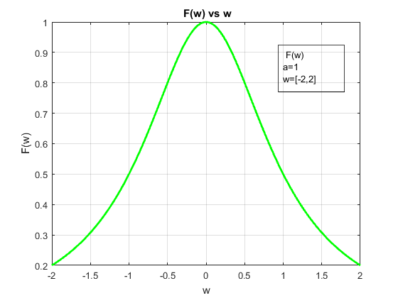

Práctica 2
Integrantes del equipo
- Alarcon Camacho Aldo yosef
- Islas Martinez Ceasar
- Monroy Reza Rene
- Ochoa Velasquez José Abraham
Contents
Objetivos
- Manipulación Básica de MATLAB%
- Gráficas de señales reales y complejas continuas
- Transformación de señales contuinuas (escalamientos y traslaciones)
- Cálculo de energía y potencia de señales continuas
Introdución
Breve Historia de MATLAB
Hoy en día MATLAB se trata de un entorno informático técnico completo, pero el desarrollo de esta herramienta inició como un simple "Laboratorio de Matrices". J. H. Wilkinson, George Forsythe, and John Todd, fueron personas que jugaron un rol importante en los origenes de MATLAB hace mas de 50 años.
Wilkinson fue un matemático británico que pasó su carrera entera en el Laboratorio Nacional de Física (NPL). Trabajando con una versión simplificada de un diseño sofisticado de Alan Turing, Wilkinson y sus colegas en el NPL construyeron la "Pilot Automatic Computing Engine (ACE)", una de las primeras computadoras digitales de programa almacenado de Gran Bretaña. El Pilot ACE corrió su primer programa en Mayo de 1950. Wilkinson hizo cálculos matriciales y pasó a convertirse en la autoridad principal del mundo en el álgebra lineal numérica.
Aproximadamente al mismo tiempo, matemáticos en el Instituto para el Análisis Numérico (INA), una rama de National Bureau of Standards, estaban trabajando con la Standards Western Automatic Computer (SWAC), una de las primeras computadoras de USA. Investigadores en INA incluidos George Forsythe, John Todd, y Olga Taussky-Todd.
En 1967 Forsythe and Cleve Moler publicaron un libor sobre cálculo matricial que contenia contenido de trabajo con software: programas en Algol, Fortran y PL/I para sistemas de solución de ecuaciones linealis simultaneas.
En la decáda de 1970 Investigadores en Argonne tradujeron el código en Algol para el cálculo del valor propio de una matriz del manual de Wilkinson y Reinsch en Fortran para producir EISPACK. Este fue segudi po LINPACK, un paquete de programas de Fortran para soluconar ecuaciones lineales.
El primer Fortran MATLAB era portable y podía ser compilado en muchas de las computadoras que estaban disponibles en los finales de 1970 y principios de 1980.
En la decada de 1980 Cleve Moler con algunos de sus etudiantes de ingeniería unieron dos empresas de consultoría. Estas empresas extendieron MATLAB para tener mas capacidad en el análisis de control y procesamiento de señales,y en principios de la decáda de 1980, ofrecieron el software resultante como productos comerciales.
Jack Little, un ingeniero de control capacitado en Standford y MIT, fue el principal desarrollador de uno de los primeros productos comerciales basado en Forran MATLAB. Cuando IMB anunció su pirmer PC en Agosto de 1981, Jack anticipó la posibilidad de usar MATLAB y la PC para cálculos técnicos. Él y su colega Steve Bangert reprogramaron MATLAB en C y añadieron archivos M,toolboxes, y gráficos más potentes.
Jack Little, Steve Bangert y Cleve Moler fundaron The MathWorks en California en 1984.
Alternativas de Software Libre
es una herramienta propietaria. Sin acceso a su código fuente, tiene una comprensión limitada de cómo funciona y cómo puede modificarlo. También es prohibitivamente costoso para muchas personas fuera de un entorno académico, donde las tarifasde licencia para una sola copia pueden alcanzar los miles de dólares.
Afortunadamente existen alternativas de código abierto. Aquí hay algnas de ellas:
GNU Octave
GNU Octave puede ser la alternativa más conocida a MATLAB. En desarrollo activo durante casi tres décadas, Octave se ejecuta en Windows, Mac y Linux, y está empaquetado para la mayoría de las distribuciones principales. Si está buscando un proyecto que sea lo más parecido posible al lenguaje MATLAB real, Octave puede ser una buena opción para usted; se esfuerza por una compatibilidad exacta, por lo que muchos de sus proyectos desarrollados para MATLAB pueden ejecutarse en Octave sin necesidad de modificaciones.
Para más información puedes visitar el sitio: GNU Octave
Scilab
Scilab es otra opción de código abierto para computación numérica que se ejecuta en todas las plataformas principales: Windows, Mac y Linux incluidos. Scilab es quizás la alternativa más conocida fuera de Octave, y (como Octave) es muy similar a MATLAB en su implementación, aunque la compatibilidad exacta no es un objetivo de los desarrolladores del proyecto.
Para más información puedes visitar el sitio: Scilab
Sage
SageMath es otro sistema de software de matemáticas de código abierto que podría ser una buena opción para aquellos que buscan una alternativa de MATLAB. Está construido sobre una variedad de conocidas bibliotecas de computación científica basadas en Python, y su propio lenguaje es sintácticamente similar a Python. Tiene muchas características que incluyen una interfaz de línea de comandos, cuadernos basados en navegador, herramientas para incrustar fórmulas en otros documentos y, por supuesto, muchas bibliotecas matemáticas.
Para más información puedes visitar el sitio: Sage
Desarrollo
%Problema 1 %Realizando funcion fun1 fun1=@(a,w) a.^2./(a.^2+w.^2); %Definiendo valores para a y W a=1; w=[-2:.02:2]; %%Problema 2 %%Haciendo funcion que grafica funciones grafico2(w,fun1(a,w))
Problema 4
%M1.1
t=[-2:2];
f=@(x) exp(-x).*cos(2*pi*x);
grafico(t,f(t))
t = (-2:0.01:2);
grafico(t,f(t))
M1.2
t=[-2:2]; u = @(t)(t>=0); grafico(t,u(t)); t = (-2:0.01:2); grafico(t,u(t)); p = @(t) (t>=0)&(t<1); t = (-1:0.01:2); grafico(t,p(t));
M1.3
g = @(t) exp(-t).*cos(2*pi*t).*(t>=0); t=[-2:.01:2]; grafico(t,g(2.*t+1)); grafico(t,g(-t+1)); grafico(t,g(2*t+1) +g(-t+1));

M1.4
x = @(t)exp(-t).*((t>=0)&(t<1)); t = [0:0.01:1]; E_x =sum(x(t).*x(t)*0.01) x_squared = @(t)exp(-2*t).*((t>=0)&(t>1)); E_x = quad(x_squared,0,1) t = [0:0.001:100]; g_squared = @(t) exp(-2*t).*(cos(2*pi*t).^2).*(t>=0) E_g=sum(g_squared(t)*0.001) E_g =quad(g_squared, 0,100)
E_x =
0.4367
E_x =
0
g_squared =
@(t)exp(-2*t).*(cos(2*pi*t).^2).*(t>=0)
E_g =
0.2567
E_g =
0.2562
Problema 5 (1.2.2)
h=@(t) -t.*((t>=-4)&(t<0)); h1=@(t)(t).*(t>=0); p=@(t) h1(t)+h(t); t1=[-4:2]; grafico(t1,p(t1));
Problema 1.2.2(a)
grafico(t1+4,p(t1))
Problema 1.2.2(b)
grafico(t1.*(1.5),p(t1))
Problema 1.2.2(c)
grafico(-t1,p(t1))
Problema 1.2.2(d)
grafico((t1./2)+4,p(t1))
Problema 1.2.2(e)
grafico((-t1)+2,p(t1))
Problema 7
Crear una función que calcule la potencia de una señal
function Px=Potencia(T,fun,a,b) syms t; % fun=función sin escalamientos; % b=escalamiento horizontal; % a=escalamiento vertical; % T=Periodo de la Función original T1=T/b; f=@(t) (fun(b.*t)).^2; P=@(T0,f) (a^2)*(1/T0)*integral(f,-T0/2,T0/2); Px=P(T1,f); end
Ejemplo 1.1.4
Find the power of the periodic signal shown in Fig P1.1-4. Find also the rms values of:
t1=-5:0.1:5; f=t1.^3.*(t1>=-2 & t1<=2); plot(t1,f,'LineWidth',2,'Color',[0 0 0]); title('Fig. P1.1-4'); % f=@(t) t.^3; syms c; Px=Potencia(4,f,1,1) Px1=Potencia(4,f,-1,1) Px2=Potencia(4,f,2,1) Px3=Potencia(4,f,c,1) rms1=sqrt(Px1) rms2=sqrt(Px2) rms3=sqrt(Px3)
Px =
9.1429
Px1 =
9.1429
Px2 =
36.5714
Px3 =
(64*c^2)/7
rms1 =
3.0237
rms2 =
6.0474
rms3 =
((64*c^2)/7)^(1/2)
Referencias
- Cleve Moler. (2004). The Origins of MATLAB. 2019, de MathWorks Sitio web: https://www.mathworks.com/company/newsletters/articles/the-origins-of-matlab.html
- maslinux. (2017). 3 Alternativas de Código abierto a MATLAB. 2019, de maslinux Sitio web: https://maslinux.es/3-alternativas-de-codigo-abierto-a-matlab/
- B. P. Lathi, Linear systems and signals,Oxford University Press , 2005. Convolucion,procesamiento de se~nales.Recuperado el 6 de septiembre del 2019.https://ramaucsa.wordpress.com/2013/12/17/convolucion-procesamiento-de-senales/